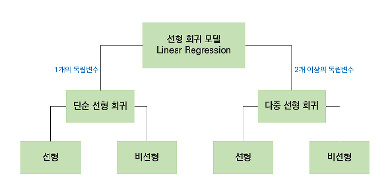

Linear Regression-basic
Python 강좌는 여러 절로 구성되어 있습니다.
Linear Regression (선형 회귀 분석)
[목차]
- 선형 회귀 모델의 정의
- 선형 회귀 모델에서의 변수 종류
- 선형 회귀 모델의 종류
- 선형 회귀 모델에서의 리니어 방정식
- 선형 회귀 모델에서의 모집단과 표본집단
1. 선형 회귀 모델의 정의
우선 ‘모델’이란 무엇일까? 쉽게 ‘모델’을 떠올려 보자. 일반적으로 인간을 대표해서 옷을 걸치고 런웨이를 하는 모델을 떠올릴 수 있다. 자동차 모델, 노트북 모델, 등등 모델이라 함은 그 대상을 대표하는 것이다.
여기서 유추할 수 있듯이 회귀 모델에서의 모델 또한 데이터를 대표할 수 있는 모델을 만드는 것이다. 이 모델을 통해 데이터의 경향성을 파악하기도 하고 예측하기도 한다. 그래서 우리는 모델링을 하려 하는 것이다.
그렇다면, 선형 회귀 모델은 무엇일까?
간단히 말하면, 데이터를 잘 나타내는(대표하는) 선을 만들어 y값(우리가 관심있는 변수)을 분석하고자 하는 모델링 기술이다.
2. 선형 회귀 모델에서의 변수 종류
앞서 말했듯이, ‘선’을 만들기 위해서 방정식을 사용한다. 우리가 알고있는 일차 방정식인 y=ax+b를 떠올리면 이해하기 쉽다. 여기서 용어 정리!!
-
종속변수(y) -관심있는 특정 현상을 나타내는 변수(ex)주식의 순수익, 고객들의 방문 수) -동의어: 반응변수(response variable), 결과 변수(outcome variable)
-
독립변수(x) -종속변수(y)에 영향을 끼칠 수 있는 변수(ex) 기업의 매출, 고객의 가족 수) -동의어: 설명변수(explanatory variable), 예측변수(predictor)
이때, 주의해야 할 점은 독립 변수(x)는 수치형 변수 또는 범주형 변수여야 하고 종속변수(y)는 연속형 수치변수여야 한다는 점이다.
또한, 선형 회귀 모델을 쓰기 위해서 데이터가 선형성, 등분산성, 정규성, 독립성의 4가지 가정을 만족해야 한다. 이는 다른 글에서 자세하게 다루겠다.
3. 선형 회귀 모델의 종류
 위의 표와 같이 독립변수의 갯수로 선형 회귀 모델의 종류가 나뉜다.
4. 선형 회귀 모델에서의 리니어 방정식
위의 식은 독립변수 x의 개수가 1개인 단순선형회귀 일 때의 방정식을 나타낸 것이고, x 개수가 2개 이상 늘어난다면 위의 방정식에서 x의 갯수를 늘려주면 된다.
5. 선형 회귀 모델에서의 모집단과 표본집단
기본적으로, 우리는 데이터 분석을 통하여 모집단(population)을 알고 싶어한다. 예를 들어, 모든 여자 몸무게의 평균(모집단) 알기 위해서 지구상의 모든 여자들의 몸무게를 구하여 평균을 낼 순 없으니 표본 집단(sample)을 뽑아 이를 추정하는 것이다. 그렇다면 선형 회귀 모델에서 모집단과 표본집단은 어떤 모습일까? 아래 그림은 모집단과 표본집단에서 선형 회귀 방정식을 표현한 것이다.
위의 오른쪽의 그림에서 어떤 선이 데이터를 잘 나타내고 있을까? 이에 관하여 다음 포스팅에서 LSE(Least Square Estimation)와 함께 설명하겠다.